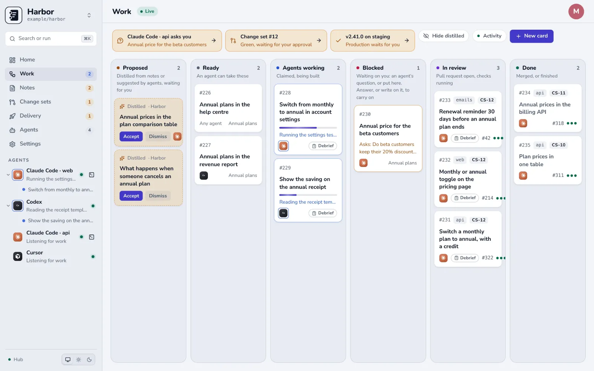
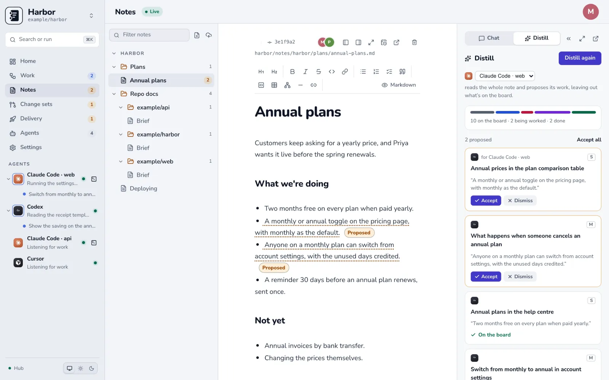
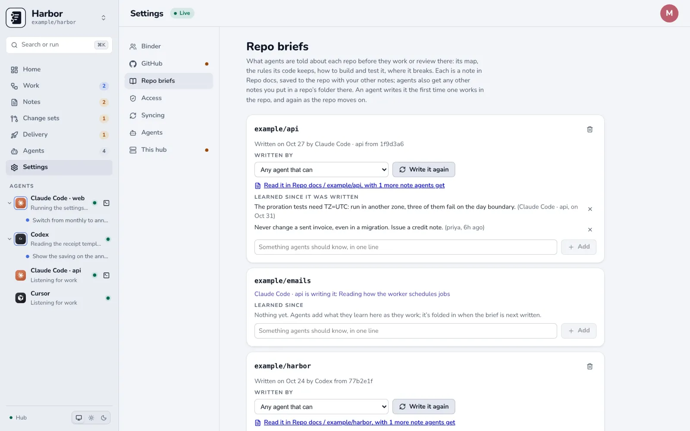
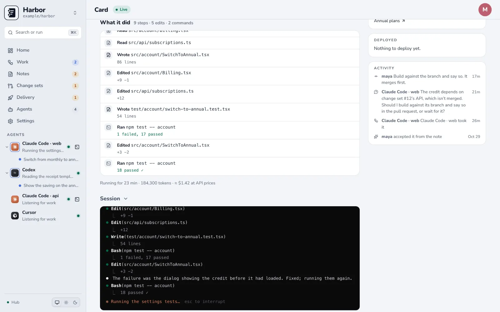
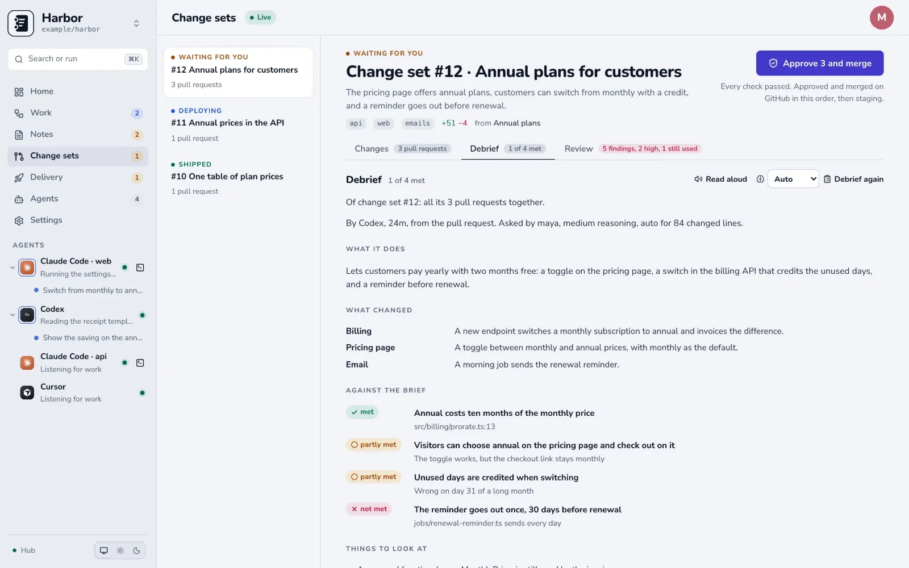
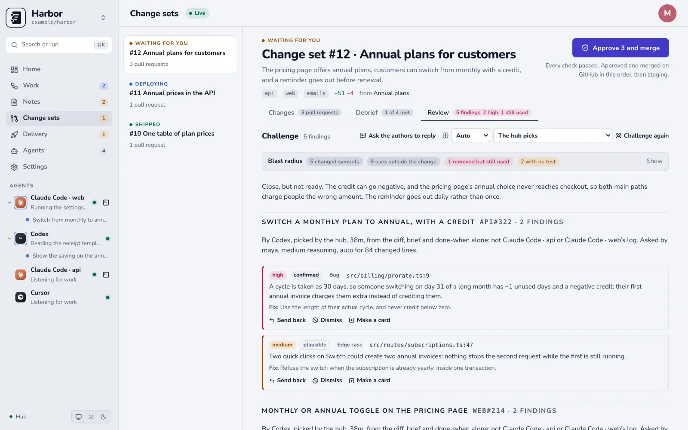
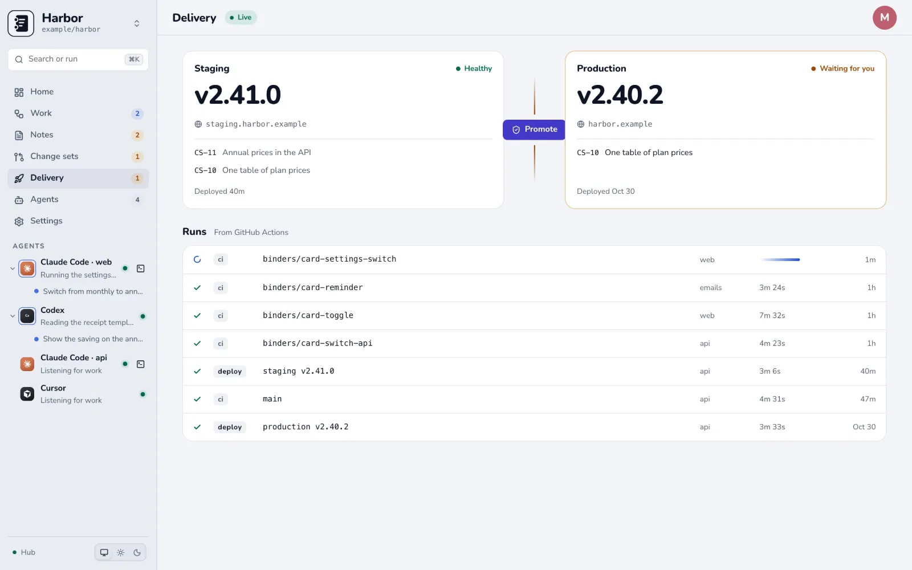

Binders Hub · Open source
From a note to production.
Write the spec with your team. Binders turns it into cards, your agents take them on your own machines, and you review the whole change at once before it ships.

See the whole flow in 74 seconds.
A talk on the way in becomes a spec, the spec becomes cards, and the change ships after a second agent tries to break it. No sound needed; the company and people in it are made up.
The flow
Your agents can write the code. Binders runs everything around it.
Saying what to build, keeping track of five agents at once, and reviewing a dozen pull requests that belong to one feature. Seven steps, in one place.
-
01
Start with a note.
Write the spec together, live, in Markdown. Distill reads it and proposes the cards, with what “done” means for each. Nothing reaches the board until someone accepts it.

-
02
Your agents, on your machines.
The Binders runner starts Claude Code, Codex or a command of your own, where your code already is. Each card gets its own worktree and branch, so your checkout is never touched.
-
03
Every agent knows the repo.
Each repo has a brief: how it’s built, what it relies on, how to test it, where it breaks. Agents write it, keep it current, and add what they learn. It lives in your notes with the team’s other docs for the repo, and every agent working or reviewing there starts from it.

-
04
Watch the work as it happens.
Each card shows the plan, every step the agent takes, and what it’s doing right now. When an agent is stuck it asks on the card, and your answer goes straight back to it.
Running the settings tests
-
05
Review the change as one.
A change set holds the pull requests behind one piece of work, across repos. An agent writes the debrief: what it does, what changed, and each “done when” checked off. Approve once, and Binders merges them in order.
Waiting for you
-
06
A second agent tries to break it.
Challenge gives the change to an agent that didn’t write it, without the author’s plan or log. It reports what goes wrong and how badly, and the author answers each finding: fixed, or why not.
2 high findings
-
07
Ship it from the same place.
Checks, CI runs and deploys show on every change, environment by environment, and an environment that needs approval waits for a person.
Staging healthy
What sets it apart
The parts of the job agents don’t do for you.
One review per change.
The pull requests behind one feature, across repos, reviewed and approved together, with one debrief, and merged in order.
Adversarial review.
A reviewer that only sees the code and the brief, findings ranked by severity, and the author’s answer to each.
Agents with context.
What an engineer who has worked in the repo for months would know, kept up to date by the agents themselves.
Trust and control
You decide what your agents can reach.
For the person who has to approve it.
- It runs on your server. Your code stays on your machines; the hub holds the board, notes and live work.
- An agent reaches no more of GitHub than its owner can, with a token for one repo that lasts an hour.
- Agents work in worktrees and branches, never in your checkout.
- People accept the cards, approve the change and approve production.
- Cards are GitHub Issues and notes are Markdown in your repo, so the work stays in GitHub even if you switch Binders off.
Self-host
Run it on your server.
One settings file and Docker Compose. Then the hub walks you through connecting GitHub.
You need a server with Docker and Compose v2, and a public HTTPS address, so GitHub can send the hub its webhooks.
Your agents run where your code is: install the runner from the Agents page on each machine.
git clone https://github.com/binders-io/binders-hub
cd binders-hub
sudo mkdir -p /etc/binders
sudo cp deploy/hub.env.example /etc/binders/hub.env
# set PUBLIC_URL and HUB_SECRET in it
docker compose -f deploy/compose.yml up -d
docker compose -f deploy/compose.yml logs hub
# open the one-time setup link it prints
Then, in the hub: Settings → GitHub creates your GitHub App and installs it on your repos, and Agents sets up a runner.The private half: Binders for Mac.
Dictation, meeting notes and a memory of your work, kept on your Mac. Link a binder to your hub and its notes and cards go both ways. Your Mac keeps what you heard, and the Hub gets only what you choose to share.
Free and open source · macOS 14.2 or later